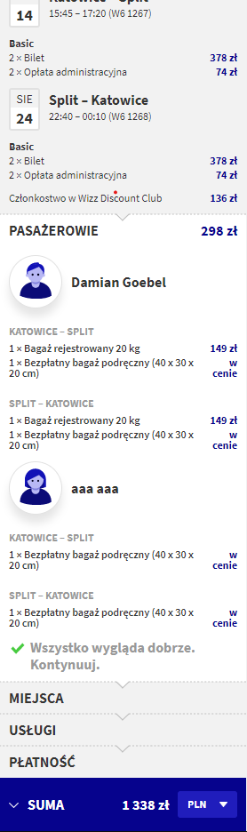
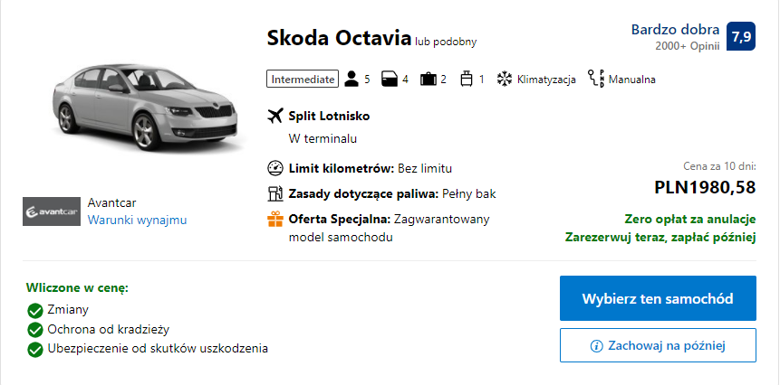

Wakacje 2021!
Strona poświęcona wakacjom 2021 w Chorwacji. Czemu strona? Bo mogę i
mi się nudziło w pracy.

Póki co udało się nam wstępnie ustalić akomodacje, przeloty i transport na miejscu. Nasza wspaniała podróż zacznie się 14 sierpnia 2021 o godzinie 15:45 wylotem z Katowic do Splitu, a skończy lotem powrotnym, który będzie w Katowicach o godzinie 00:10 25 sierpnia 2021.
Nocleg
Nocleg mamy w mieście Makarska, w apartamencie Ramljak. Jest to nocleg bez wyżywienia. Niestety Google Maps nie ma tej lokalizacji w swojej bazie, więc pinezka poniżej pokazuje dokładny adres, gdzie się to znajduje.
Jak klikniecie w ten napis, to was przeniesie na booking.com, gdzie rezerwowałem ten apartament. Możecie tam sobie podejrzeć zdjęcia obiektu.
Cena za 10 nocy to 6424 zł, co w przeliczeniu na jedną osobę, zakładając że uzbieramy cały komplet (8 osób) wynosi 803 zł.
Loty
WAŻNE!
Im później kupimy bilety, tym droższe mogą być. Polecam czym prędzej każdemu się dobrać w parę i je kupić nawet teraz.
Chyba najbardziej upierdliwa rzecz całego wyjazdu, czyli nieszczęsne
loty. Póki co siatkę bezpośrednich lotów do
Splitu ma jedynie Wizz Air.
LOT jeszcze posiada połączenia, ale są one na
przesiadkę i średnio się opłacają. Im bliżej terminu wakacji będzie,
tym więcej pewnie będzie połączeń innych przewoźników, ale trzeba
się liczyć z tym, że ceny wtedy będą wyższe, bo będzie środek sezonu
wakacyjnego.
Zakładając, że będziemy kupować bilety na loty
Wizz Air, to sprawa przedstawia się następująco:
-
Wylot z Katowic mielibyśmy 14 sierpnia 2021 o godzinie 15:45 i na miejscu bylibyśmy o 17:20. Powrót 24 sierpnia 2021 o godzinie 22:40 ze Splitu i w Katowicach byśmy byli o 00:10 25 sierpnia 2021.
-
Najlepiej jak się dobierzemy w parę i będziemy kupować bilety wspólnie ponieważ jedna z osób powinna wykupić Wizz Discount Club, dzięki któremu mamy zniżkę na bilety i na wykup bagażu rejestrowanego do 20kg. Cena Wizz Discount Club to 136zł. Wystarczy, że zakupi to jedna osoba, ponieważ wtedy będzie mogła dodać drugą osobę jako członka i na jego bilety i bagaż też będzie zniżka.
-
Same bilety kosztują po 378 zł za osobę, w dwie strony, plus do tego opłata administracyjna w wysokości 74 zł. Reasumując, każdy z nas musi dać na same bilety 452 zł (bez bagażu rejestrowanego, tylko z bezpłatnym bagażem podręcznym, który jest śmiesznie mały: 40 x 30 x 20 cm, jest to rozmiar małego plecaka)
-
Zakładam, że raczej nikt się nie zapakuje do tego małego plecaka na 10 dni, więc wypadałoby wykupić bagaż rejestrowany. Proponuje kupno jednego bagażu rejestrowanego do 20kg, na dwie osoby (więc musicie się zmieścić do jednej walizki). Koszt takiej przyjemności to 149 zł w jedną stronę, a wiadomo że trzeba też wrócić z tymi rzeczami więc za bagaż rejestrowany w dwie strony robi się łącznie 298 zł.
-
Bierzemy najtańsze bilety więc nie mamy możliwości wybrania sobie miejsca, a odprawę mamy na dwa dni przed wylotem z Katowic i na dwa dni przed wylotem ze Splitu. Można sobie wybrać samemu miejsce, ale kosztuje to około 50 zł za miejsce. Według mnie się to nie opłaca, bo lot trwa tylko półtorej godziny.
-
Podsumowując, za wszystkie wydatki związane z lotem tam i z powrotem, wychodzi nam 1338 zł za dwie osoby, czyli 669 zł za osobę.
Poniżej obrazek koszyka z Wizz Air.
Transport w Chorwacji
W kwesti transportu w Chorwacji, to chcemy wynająć samochód. Pięciosobowa Skoda Octavia za cenę 1980 zł za 10 dni, czyli za osobę wychodzi 247,50 zł. Auto dostajemy z pełnym bakiem na lotnisku w Splicie, więc na trasę ze Splitu do Makarsk i z powrotem, gdzie jest około ~80km w jedną stronę, powinno starczyć i jeszcze zostanie. Kierowcą mogę być ja, a z racji tego, że będzie nas 8 osób, to będziemy jechać na dwa razy z lotniska i do lotniska. Obstawiam, że jakieś tankowanie będzie potrzebne, ale ceny paliwa są zbliżone do polskich, więc dużo to nas nie wyniesie.

Inne wydatki
Z racji tego, że nie mamy wyżywienia w naszym obiekcie, to każdy z nas potrzbuje mieć jakiś hajs na przeżycie. Ceny w chorwackich supermarketach są zbliżone do tych w polskich, więc szoku cenowego raczej nie przeżyjemy. Poniżej tabelka z przykładowymi produktami, cenami w kunach i w przeliczeniu na złotówki.
| Produkt | Cena w HRK | Cena w przeliczeniu na PLN |
|---|---|---|
| Piwo Karlovacko 1,85l | 23,93 HRK | Około 13,64 zł |
| Wódka czysta Vigor 1l | 72,99 HRK | Około 41,60 zł |
| Chleb jasny 700g | 6,29 HRK | Około 3,59 zł |
| Czekolada mleczna Milka 80g | 8,49 HRK | Około 4,84 zł |
| Woda gazowana Radenska 1,5l | 5,79 HRK | Około 3,30 zł |
| Mleko 1L | Około 4 HRK | Około 2,28 zł |
| Parówki (Cekin) 300g | 9,99 HRK | Około 5,69 zł |
Ceny w lokalch są też zbliżone do polskich (bardziej np. Krakowskich i Warszawskich). Wiadomo, tam gdzie chodza lokalsi będzie taniej, a w bardziej turystycznych knajpach drożej. Po więcej danych możecie sięgnąć na przykład na tą stronę.
Podsumowanie
Reasumując, za całe wakacje (przeloty, nocleg i transport na
miejscu) wyjdzie nam 1719,50 zł przy założeniach że
każda dwójka weźmie tylko jeden bagaż rejestrowany do 20kg, kupimy
bilety w miarę wcześnie i pojedzie nas 8 osób.
Nocleg zarezerowowałem ja, więc hajs za niego idzie do mnie na
konto. Najprawdopodoniej ja też zarezerwuje samochód tam, więc też
do mnie pieniądze. Co do lotów, to każda dwójka, indywidualnie
między sobą się rozliczy.
Padł również pomysł żeby mi wpłacać zaliczki, aby się nie okazało,
że ktoś na 2 tygodnie przed planowanym wylotem nagle rezygnuje,
pomimo zapewnień o wyjeździe. Uważam, że to super pomysł, więc
możecie je wpłacać do mnie w wysokości 200 zł od
osoby. Zaliczki proszę wpłacać do końca października na moje konto
albo BLIKiem. Fajnie by było jakbyście w tytule przelewu zaznaczyli,
że to na wakacje 2021. Oczywiście zaliczka będzie spożytkowana na
poczet opłat za nocleg - w późniejszym terminie będziemy się składać
o to 200 zł mniej.
Dane do przelewu
Imię i nazwisko: Damian Goebel
Numer konta:
33116022020000000269116525
Numer telefonu w razie przelewu BLIKiem: 732185698
Tytuł przelewu: Wakacje 2021 {wasze imie}